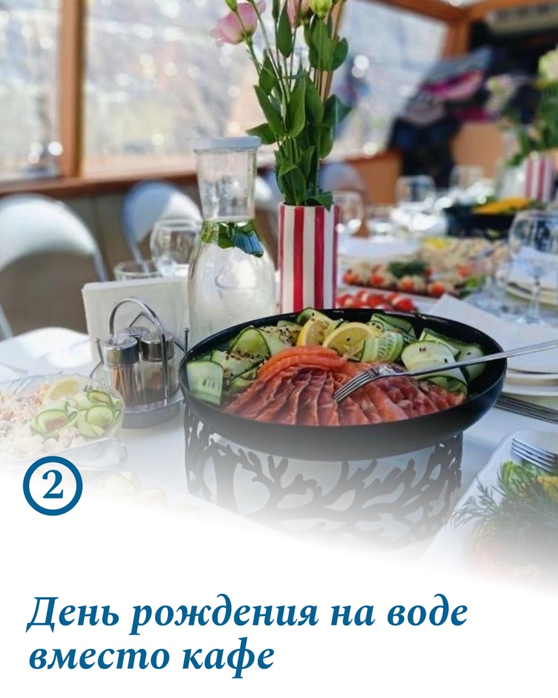
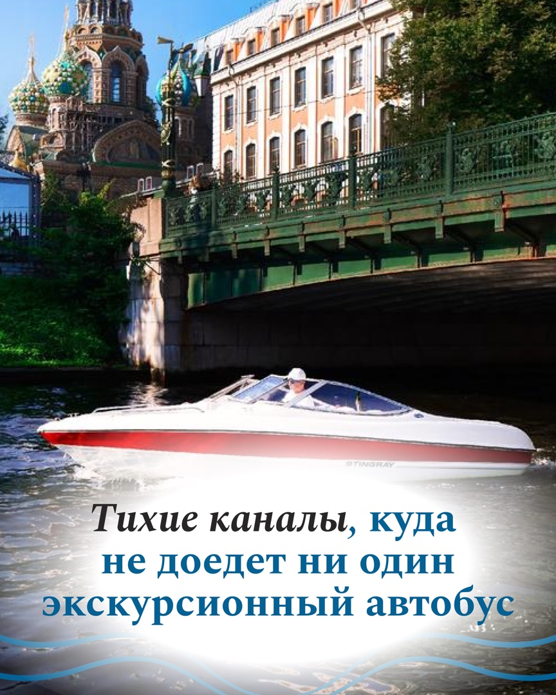

Водные прогулки · Санкт-Петербург · VK
Как превратить выбор судна и маршрута в понятный месяц контента
Для Fjord-Petersburg собрали не витрину одинаковых катеров, а путь клиента: выбрать повод, понять разницу между судами, представить свой маршрут и написать за подбором.
10 основных публикаций и подарочная карусель согласованы; 10 материалов загружены в календарь VK как черновики.
На странице показаны только финальные кадры без узнаваемых лиц. Метрики, фактический выход всех постов и текущие сезонные цены не придумываем.



Маркетинговая задача
Человек выбирает не катер. Он выбирает свой будущий день
В услуге много переменных: повод, размер компании, погода, маршрут, атмосфера и формат судна. Если просто выкладывать красивые фотографии, клиенту всё равно трудно решить, что подходит именно ему.
Что остаётся непонятным
«Какое судно выбрать и что вообще входит?»
Катер, яхта или теплоход?Центр или залив?Что будет при дожде?Подойдёт для праздника?Что входит в пакет?
Как отвечает контент
Сначала ситуация клиента — затем конкретный выбор
- 01Помогаем представить повод
День рождения, девичник, свидание или просто новый вид Петербурга.
- 02Объясняем разницу
Размер компании, погода и сценарий определяют подходящее судно.
- 03Показываем маршрут
Центр, Нева, залив и тихие каналы становятся понятными вариантами.
- 04Переводим в сообщение
Не заставляем разбираться одному — предлагаем подобрать формат под задачу.
Логика месяца
От мечты о прогулке до сообщения за подбором
Десять тем не повторяют одну рекламу. Они последовательно создают желание, дают ориентиры, снимают сомнения и облегчают выбор.
Увидеть Петербург иначе
Показываем ценность вида с воды и атмосферу прогулки.
Выбрать свой повод
Связываем услугу с реальными событиями и отдыхом.
Понять суда
Объясняем выбор через компанию, погоду и формат.
Центр или залив
Превращаем абстрактную прогулку в понятный маршрут.
Получить подбор
Подводим к простому действию без сложного самостоятельного расчёта.
Как проходят прогулки и собирается маршрут.
Выбор судна, цен и подходящего пакета.
Аренда без лишних страхов и одинаковых катеров.
Повод для прогулки и выбор маршрута.
Сезонный спрос и конкретный сценарий события.
Готовый продукт
Весь план и 15 безопасных финальных кадров
Полный комплект состоит из 29 PNG. Здесь показываем реальную выборку без узнаваемых лиц; остальные файлы учтены в точном составе и темах.
10 основных публикаций
Пять задач контента в одной последовательности
Две темы разворачиваются в карусели по 7 слайдов. Отдельная подарочная карусель не заменяет ни одну из десяти основных публикаций.
- Что видно с воды и как строится маршрутКомпания и работа · одиночный пост
- Три мифа про аренду катераСнять сомнения · одиночный пост
- Лето на воде: как проходят наши прогулкиКомпания и работа · карусель, 7 слайдов
- Ради какого повода вы вышли бы на воду?Вовлечение · одиночный пост
- Пик сезона: лучшие даты уходят первымиПредложение периода · одиночный пост
- Как выбрать судно под ваш поводПольза · карусель, 7 слайдов
- Все катера одинаковые — почему нет?Снять миф · одиночный пост
- Девичник на бортуПредложение сценария · одиночный пост
- Центр или залив — куда бы вы поехали?Вовлечение · одиночный пост
- Цены и пакеты в одном местеПольза · одиночный пост
Подарок: карусель «Петербург, который видно только с воды» — ещё 7 финальных слайдов сверх основного пакета.
Публичная выборка
15 финальных макетов без узнаваемых лиц
Четырнадцать других файлов оставлены вне галереи из-за людей в кадре — даже там, где фигуры небольшие. Объём проекта от этого не уменьшаем.
✓
Правило отбора: показываем кадры без людей либо с дальними фигурами, у которых невозможно различить лицо. Все изображения ниже взяты из утверждённой финальной папки.
Основная карусель · 7 слайдов
Лето на воде: как проходят прогулки
На сайте доступны 5 безопасных слайдов. Слайды 2 и 5 исключены из-за узнаваемых людей.
Логика: показать атмосферу → дать сценарии события → объяснить, что входит → предложить подбор судна под повод.

1 / 5
Основная карусель · 7 слайдов
Как выбрать судно под ваш повод
На сайте доступны 4 безопасных слайда. Обложка и ещё два кадра с людьми оставлены вне публичной версии.
Логика выбора: размер компании → повод → погода → подходящий формат судна.
1 / 4
Карусель в подарок · 7 слайдов
Петербург, который видно только с воды
На сайте доступны 4 безопасных слайда. Ещё 3 не показаны из-за людей в кадре.
Роль подарка: дать сохраняемый маршрут впечатлений и ещё один мягкий повод написать за прогулкой.

1 / 4
Процесс под ключ
От вводных до готового календаря VK
Кейс показывает не только дизайн. Внутри есть маркетинговая структура, тексты, клиентские материалы, правки, финальный комплект и загрузка в систему публикации.
Разобрали вводные
Зафиксировали услуги, сценарии отдыха, сезон, аудиторию и вопросы по навигации страницы.
Собрали план и тексты
Распределили 10 тем между пользой, доверием, мифами, вовлечением и предложениями.
Сделали 29 визуалов
Восемь одиночных постов и три карусели по семь слайдов собраны в одной системе.
Согласовали и загрузили
Финальный визуал утверждён; десять основных публикаций добавлены в PostMyPost как черновики VK.
Границы доказательств
Показываем готовый продукт честно
По этому проекту можно оценить логику, тексты, дизайн и организованность процесса. Цифры после публикации требуют отдельной аналитики.
29финальных PNG в утверждённой папке
→15безопасных файлов показаны на сайте
+14не публикуем из-за людей в кадре
Что подтверждено
- 10 основных публикаций;
- 8 одиночных постов и 2 карусели;
- подарочная карусель из 7 слайдов;
- 29 финальных визуальных файлов;
- утверждение контент-плана и визуала;
- загрузка 10 VK-черновиков.
Чего мы не заявляем
Фактический выход каждого материала, охваты, сохранения, обращения, продажи и окупаемость не подтверждены. Цены, свободные даты и сезонные предложения внутри проекта относятся к июлю–августу 2026 года.
Лица исключены из публичной галереи. Контактные данные и внутренние ссылки клиента на страницу не переносились.
Нужен такой же порядок в контенте?
Покажем вашу услугу так, чтобы человеку было проще выбрать и написать
10 постов с маркетинговым планом, текстами и дизайном — от 4 990 ₽.